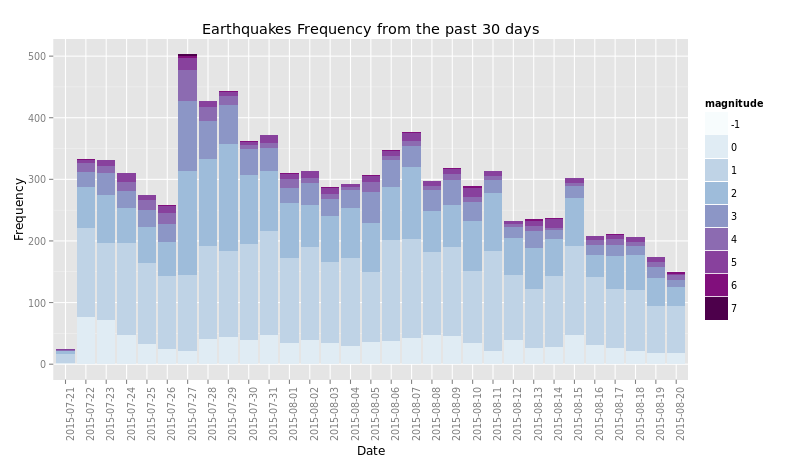

Earthquakes of the last 30 months from the earthquake.usgs.gov feed.
Below are the fields included in the spreadsheet output:
time latitude longitude depth mag magType nst gap dmin rms net id updated place
Plotting earthquakes frequency and location:
library(reshape2)
library(ggplot2)
library(ggmap)
eq <- read.csv("http://earthquake.usgs.gov/earthquakes/feed/v1.0/summary/all_month.csv", as.is = T)
head(eq[c("time", "longitude", "latitude", "mag")])
## time longitude latitude mag
## 1 2015-07-03T08:52:29.240Z -116.7768 33.27050 1.69
## 2 2015-07-03T08:50:41.410Z -116.7822 33.27117 2.44
## 3 2015-07-03T08:48:16.750Z -121.6347 37.24750 1.46
## 4 2015-07-03T08:38:33.220Z 127.2178 1.20780 4.70
## 5 2015-07-03T08:30:23.310Z -122.8367 38.80783 1.49
## 6 2015-07-03T08:29:39.000Z -151.4705 62.43620 1.40
eq$area <- factor(sub("^[^,]+, ", "", eq$place))
eq$date <- as.Date(strtrim(eq$time, 19), format = "%Y-%m-%dT%H:%M:%S")
eqFreq1 <- table(eq$date, eq$mag, eq$area)
eqFreq2 <- melt(eqFreq1)
names(eqFreq2) <- c("date", "M", "area", "freq")
head(subset(eqFreq2, freq > 0 & M > 0))
## date M area freq
## 10831 2015-06-14 4.1 Afghanistan 3
## 10838 2015-06-21 4.1 Afghanistan 1
## 10844 2015-06-27 4.1 Afghanistan 1
## 10870 2015-06-22 4.2 Afghanistan 1
## 10887 2015-06-08 4.3 Afghanistan 1
## 10894 2015-06-15 4.3 Afghanistan 2
eqFreq2$M <- factor(round(eqFreq2$M))
ggplot(eqFreq2, aes(date, weight = freq, fill = M)) + geom_bar(binwidth = 60 * 60 * 24) + labs(x = "Date",
y = "Frequency", title = "Earthquakes Frequency from the past 30 days") + theme(axis.text.x = element_text(angle = 90,
hjust = 1))

world_map <- map_data("world")
p <- ggplot() + coord_fixed() + xlab("") + ylab("")
base_world <- p + geom_polygon(data = world_map, aes(x = long, y = lat, group = group), colour = "light green",
fill = "light green")
base_world + geom_point(aes(x = longitude, y = latitude, size = mag), data = eq, colour = "Deep Pink",
fill = "Pink", pch = 21, alpha = I(0.7))